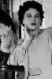
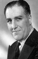

Country:United States, 86 minutes
Spoken languages:English
Genres:Mystery, Thriller
Director(s):Alfred Hitchcock
Writer(s):Charles Bennett, Ian Hay, John Buchan
Video Codec:Unknown
Number: 127


Certification:NR
Storyline:
Richard Hanney has a rude awakening when a glamorous female spy falls into his bed -- with a knife in her back. Having a bit of trouble explaining it all to Scotland Yard, he heads for the hills of Scotland to try to clear his name by locating the spy ring known as "The 39 Steps."
Cast:  

Medium: Original DVD,
Comments: Platinum DVD
Loaned: No
Aspect ratio: Unknown